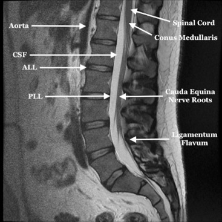

Adapted from: Kuris EO, McDonald CL, Palumbo MA, Daniels AH. Evaluation and Management of Cauda Equina Syndrome, The American Journal of Medicine (Published online August 30, 2021; Accessed on 03 Jan 2026) https://doi.org/10.1016/j.amjmed.2021.07.021
1) Description of Measurement
The cauda equina nerve root area refers to the cross-sectional area occupied by the intrathecal nerve roots within the lumbar spinal canal. Rather than evaluating canal size alone, this measure reflects functional crowding of neural elements, making it particularly relevant for research on the severity of lumbar spinal stenosis and neurogenic claudication.
2) Instructions to Measure
When evaluating the cauda equina, the distribution, thickness characteristics (e.g., thickening and atrophy), space-occupying lesions, and contrast enhancement are primarily assessed. Use axial T2-weighted MRI at the most stenotic level of the lumbar spine. Outline the combined area of all visible cauda equina nerve roots within the thecal sac. Key measurements include:
Some protocols compare the nerve root area to the total dural sac area to derive a crowding ratio.
3) Normal vs. Pathologic Ranges
There is no universally accepted normal cutoff. Reduced free CSF signal and increased nerve root packing density are associated with symptomatic stenosis. These facts indicate a close association between redundant nerve roots and spinal canal constriction, with pathogenesis characterized by a compressive force on nerve roots at the site of constriction.
4) Important References
Savarese LG, Ferreira-Neto GD, Herrero CF, Defino HL, Nogueira-Barbosa MH. Cauda equina redundant nerve roots are associated to the degree of spinal stenosis and to spondylolisthesis. Arq Neuropsiquiatr. 2014 Oct;72(10):782-7. doi: 10.1590/0004-282x20140135. PMID: 25337731.
Suzuki K, Takatsu T, Inoue H, Teramoto T, Ishida Y, Ohmori K. Redundant nerve roots of the cauda equina caused by lumbar spinal canal stenosis. Spine (Phila Pa 1976). 1992 Nov;17(11):1337-42. doi: 10.1097/00007632-199211000-00013. PMID: 1334281.
Matsushima S, Shimizu T, Baba A, Ojiri H. Physiological pseudo-thickened cauda equina associated with dural sac dilatation on magnetic resonance imaging. Neuroradiol J. 2021 Oct;34(5):401-407. doi: 10.1177/1971400921998970. Epub 2021 Mar 3. PMID: 33657903; PMCID: PMC8559026.
Ogikubo O, Forsberg L, Hansson T. The relationship between the cross-sectional area of the cauda equina and the preoperative symptoms in central lumbar spinal stenosis. Spine (Phila Pa 1976). 2007 Jun 1;32(13):1423-8; discussion 1429. doi: 10.1097/BRS.0b013e318060a5f5. PMID: 17545910.
5) Other info....
The minimum cross-sectional area of the cauda equina predicted preoperative walking ability, leg and back pain, and was directly related to patients' quality of life with central spinal stenosis.